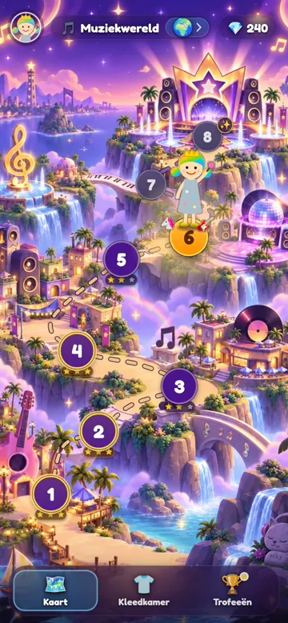

Rekenen en tellen als een show, voor kinderen van 5 tot 8.
In 26 seconden
Zonder geluid. Het filmpje toont het logo, vier schermen uit het spel en waar je het vindt.
Wat je kind doet

Een eigen ster
Een naam, een kleur en een look. Elk kind in het gezin krijgt een eigen ster.

Op reis
Van halte naar halte, door steeds nieuwe werelden.

Shows spelen
Op het podium, met publiek. Elke show is een reeks sommen of telopdrachten.

Sterren verdienen
Sterren per show, diamanten voor de kleedkamer, en trofeeën om te verzamelen.
Wat het leert
- Tellen, ook als je nog niet leest In de telmodus wordt alles voorgelezen.
- Plussen, minnen, maal en delen Jij kiest wat er geoefend wordt en tot welk getal.
- Wat moeilijk is, komt vaker terug En wat al lukt, komt af en toe terug, zodat het niet wegzakt.
- Fout mag Na een fout volgt een zachte hint, en daarna staat de goede som er altijd.
Rustig en veilig
- Geen reclame
- Geen account, geen e-mailadres
- Geen aankopen Diamanten verdien je alleen door te spelen.
- Alles blijft op dit toestel De voortgang staat op het toestel zelf, niet op een server. Wil je overstappen naar een ander toestel? Maak dan een back-up in het ouderdeel.
- Werkt zonder internet Na het eerste bezoek.
De site telt alleen anoniem hoeveel bezoekers er zijn (Cloudflare Web Analytics, zonder cookies). Wat je kind speelt, verlaat het toestel niet.
Zo begin je
- Open rekensterren.be.
- Tik op Nieuwe ster en maak de ster van je kind.
- Liever als app? Zet het op je beginscherm. iPhone of iPad: tik in Safari op Deel en kies ‘Zet op beginscherm’. Android: tik in Chrome op ⋮ en kies ‘App installeren’ of ‘Toevoegen aan startscherm’.
Achter het tandwiel op het beginscherm zit het ouderdeel: hoe het gaat per ster, wat er geoefend wordt, en een back-up om naar een ander toestel over te zetten.
Vertel het verder
Ken je andere ouders, of een juf of meester? Stuur ze deze pagina.